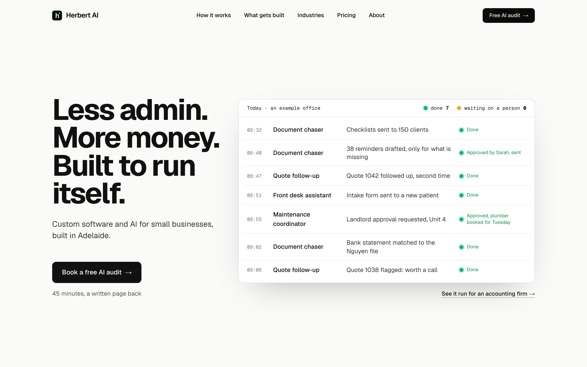
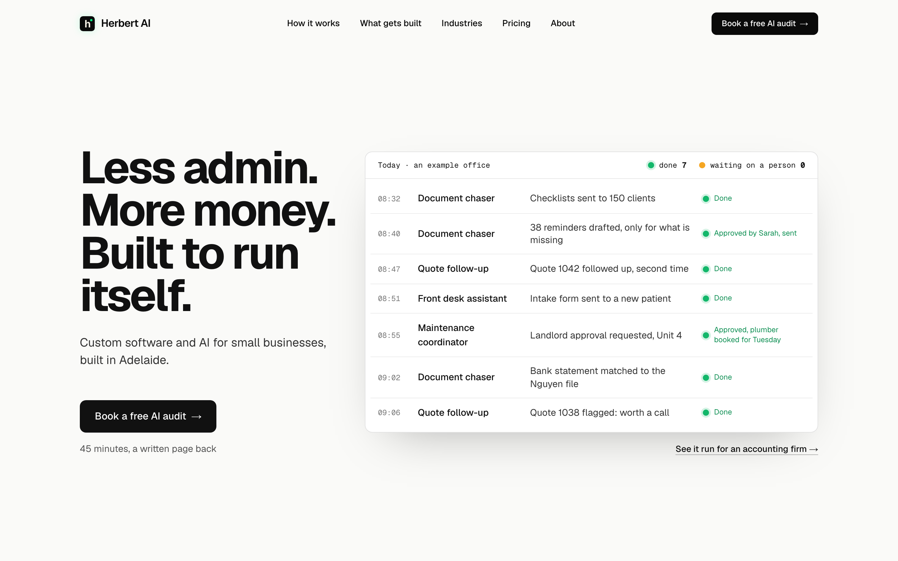
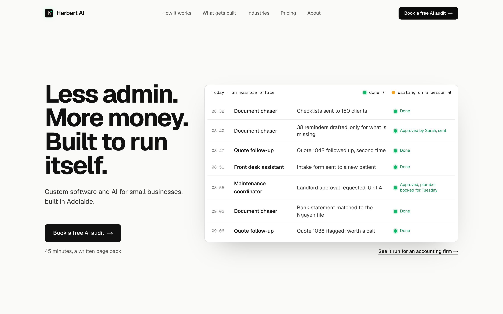
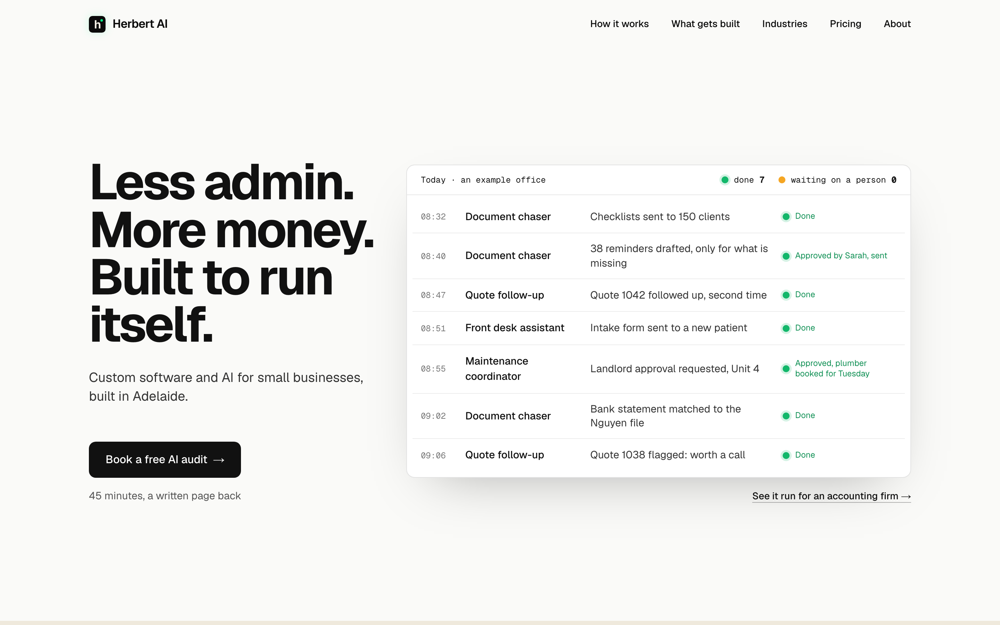

Hero detail 8: the header
The header at full size on top, the whole 1440 by 900 first screen below it. Today the nav is five 14px medium links in ink and the header button reads “Free AI audit” while the hero’s reads “Book a free AI audit”. The header does not follow on scroll and the hero now fills the rest of the screen, so on the homepage the header button only ever shows beside the hero’s button.
TodayFor comparison, not an option.

1. Match the heroThe header button reads “Book a free AI audit” like the hero’s, with white text like the hero’s, so the page uses one name for the one action. Nav unchanged.

2. Quieter navOption 1’s button, and the nav drops to regular weight in grey (#555), turning ink on hover. The headline and the board become the loudest things on the screen and the nav reads as a utility, the way Linear and Vercel set theirs. Recommended.

3. No header button on the homepageThe header button goes from the homepage only, so the first screen has one action, the hero’s, and the nav moves to the right edge. Other pages keep the button. The header gets shorter without it, so if picked the header is fixed at today’s height to keep the hero ending on the fold.
